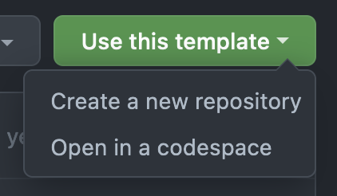
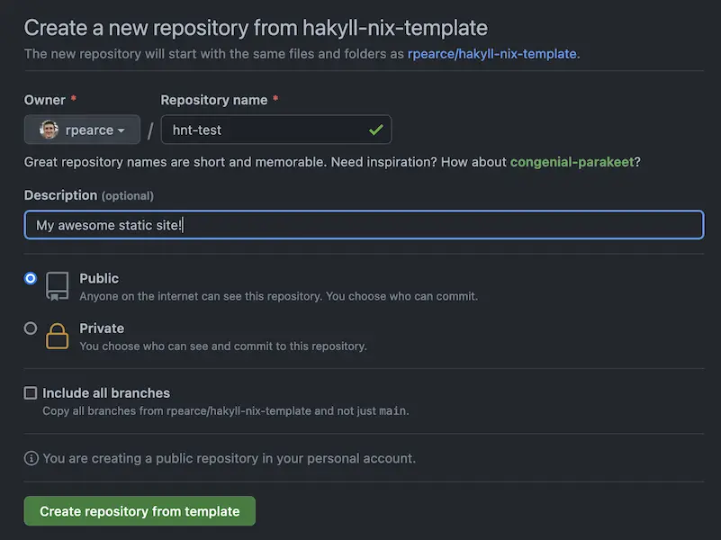
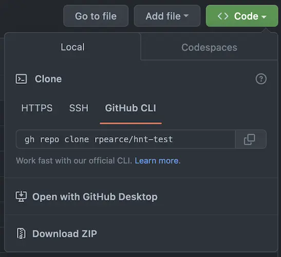
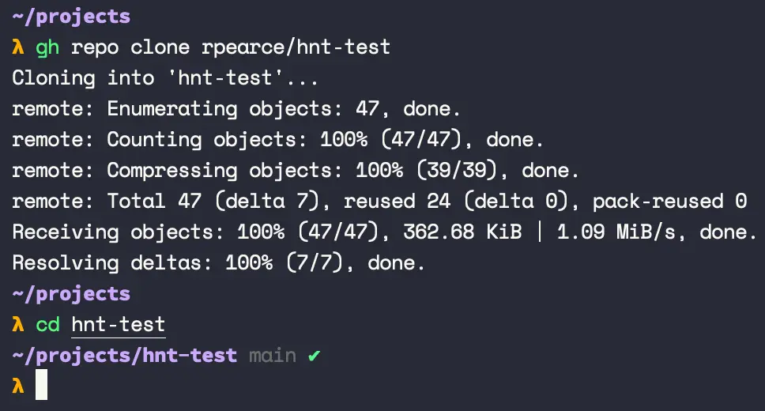
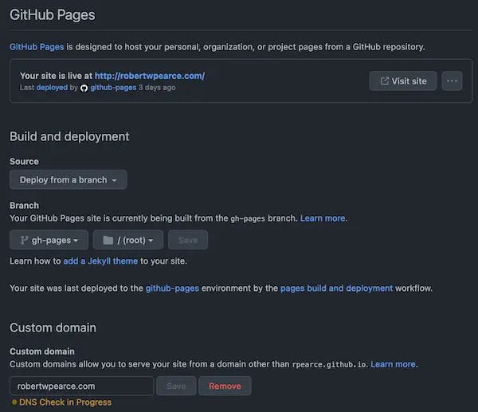

The hakyll-nix-template Tutorial
Info
| Summary | A full walkthrough for getting set up to create static sites using nix and hakyll |
|---|---|
| Shared | 2023-02-12 |
If you’re looking to use hakyll with nix to build static sites, this reference article was made for you!
We will be working with the hakyll-nix-template, so go ahead and pull that up in a new browser tab. Its README also contains info on all the features that are provided.
Overview
- Prerequisites
- Copying the template
- Building the project
- Getting into the haskell and nix dev environment
- Personalizing the project build
- Adding your first post
- Working with page metadata
- Determining what static files are copied over
- Understanding the GitHub action workflow
- Enabling GitHub Pages
- Deploying to your domain
- TODOs for hakyll-nix-template
- Other hakyll posts
Prerequisites
If you don’t have nix, follow the nix installation instructions.
Once you have nix installed, follow the nix flakes setup instructions, and then I highly recommend installing cachix, as well.
If it helps, here is my install_nix bash function, and here is my ${XDG_CONFIG_HOME}/nix/nix.conf file (note: on macOS, this will likely be ~/.config/nix/nix.conf). Feel free to copy the conf file, and just remove https://rpearce.cachix.org from substituters and rpearce.cachix.org-1:...= from the trusted-public-keys (or replace with your own cache from cachix!).
While you’re at it, we aren’t using devenv.sh nor nix-direnv in this example, but you should check them out later, too.
Copying the template
From the hakyll-nix-template page, click “Use this template” and then select “Create a new repository” from the popover menu.

Next, create a new repository from the template, filling in the details you want for the repo.

After creating the repository, click the “<> Code” button, then choose your method of cloning the repository.

Once you’ve chosen your preferred cloning command and ran that in your terminal, cd into the directory.

Alright! We’re ready to build and personalize our project.
Building the project
Run nix build, answer any substituters trust prompts, and then go do something else for a while. The first run takes a while, and how long it takes depends on connection speed, processing speed, and — most importantly — what caches you have set up in nix.conf (and/or flake.nix).
Once that is all done, you’ll have a brand new result/ directory available that is a symlink to /nix/store/<HASH>-website/. For this blog, it looks like this:
result/
└── dist/
├── CNAME
├── _config.yml
├── announcing-react-medium-image-zoom-v4.html
├── asynchronously-loading-scripts.html
├── atom.xml
├── be-better.html
├── behaviour-your-team.html
├── berlin.html
├── build-your-team-an-accessible-shareable-component-library.html
├── catch-low-hanging-accessibility-fruit-with-axe-core.html
├── chief.html
├── css
│ ├── article.css
│ ├── default.css
│ └── home.css
├── delegate-dont-dump.html
├── ...This is your static output! While you could run cd result/dist and either npx serve . or python -m SimpleHTTPServer, let’s do this the hakyll-nix-template way:
λ nix run . watch
Listening on http://127.0.0.1:8000
Initialising...
Creating store...
Creating provider...
Running rules...
Checking for out-of-date items
Compiling
SuccessLovely! If we navigate to http://127.0.0.1:8000, we’ll see the default webpage included in the project.
Getting into the haskell and nix dev environment
In a new terminal pane or window, run nix develop (note: this may take a while the first time):
λ nix develop
[hakyll-nix]λWhen you have [hakyll-nix]λ as your prompt, you know that you’re in a nix shell. This comes preloaded with most of your existing CLI tools, plus cabal, ghc, haskell-language-server, and hlint. If you want it to be exactly your environment plus the nix develop shell, check out nix-direnv.
At this point, if you’re using Vim, for example, you can run vim . and open the project up with access to the aforementioned tools.
Now, it’s time to customize the project for you.
Personalizing the project build
First, go back to your window where you can nix run . watch and cancel that; e.g., press ctrl + c.
Next, using your editor, open ssg/src/Main.hs, and read over the PERSONALIZATION section near the top:
------------------
-- PERSONALIZATION
mySiteName :: String
mySiteName = "My Site Name"
mySiteRoot :: String
mySiteRoot = "https://my-site.com"
myFeedTitle :: String
myFeedTitle = "My Site"
myFeedDescription :: String
myFeedDescription = "My Site Description"
myFeedAuthorName :: String
myFeedAuthorName = "My Name"
myFeedAuthorEmail :: String
myFeedAuthorEmail = "me@myemail.com"
myFeedRoot :: String
myFeedRoot = mySiteRootThis area contains all the high level, site-based customization text and root URLs for you to update. Go ahead and do that.
Below this area, you’ll find the CONFIG section:
-- Default configuration: https://github.com/jaspervdj/hakyll/blob/cd74877d41f41c4fba27768f84255e797748a31a/lib/Hakyll/Core/Configuration.hs#L101-L125
config :: Configuration
config =
defaultConfiguration
{ destinationDirectory = "dist"
, ignoreFile = ignoreFile'
, previewHost = "127.0.0.1"
, previewPort = 8000
, providerDirectory = "src"
, storeDirectory = "ssg/_cache"
, tmpDirectory = "ssg/_tmp"
}
where
ignoreFile' path
| "." `isPrefixOf` fileName = False
| "#" `isPrefixOf` fileName = True
| "~" `isSuffixOf` fileName = True
| ".swp" `isSuffixOf` fileName = True
| otherwise = False
where
fileName = takeFileName pathThis section specifically deals with your hakyll config. If you want to change the development server port, host, content, source directory, what files are or aren’t ignored, and some caching things, then you can do so here.
The rest of the file is all related to hakyll and the build, so if you know hakyll already, this should feel familiar, and feel free to customize it however you like.
Do note that any changes you make inside of ssg/ means you’ll need to turn your dev server off and on again.
Adding your first post
Now that we’ve customized our config, turn the dev server back on with nix run . watch. It’s time to add our first post!
Navigate to the src/posts/ folder and add a new markdown file with this naming format:
2023-02-10-my-real-post.mdAs you can see from the other posts already in this directory, we have post metadata (a.k.a. front-matter) and then the post content follows that. For example:
---
author: "Robert Pearce"
authorTwitter: "@RobertWPearce"
desc: "Welcome to the fun, probably over-engineered world of nix and haskell to make a website"
image: "./images/some-image.webp"
keywords: "hakyll, nix, haskell, static site generator"
lang: "en"
title: "Today, I used hakyll-nix-template"
---
Hello, world! I am here!…but customize this with your own content.
Save the file and watch your dev server reload and pick it up! If you refresh your browser, you should now see your post on the index page.
Working with page metadata
The author, desc, title, and other meta fields from the prior section are all completely customizable by you! These are fields that you can change, remove, or add more of, and they are used in your HTML templates in the src/templates/ folder.
If you open src/templates/post.html, you’ll see something like this:
<main>
<article>
<header>
<h1>
<a href=".$url$">$title$</a>
</h1>
<div>
<small>$date$</small>
$if(updated)$
<small>(updated: $updated$)</small>
$endif$
</div>
</header>
<section>
$body$
</section>
</article>
</main>This is all a part of hakyll, but I’ll cover some of this here to make it easier to understand all in one place.
See $title$? That comes from our post metadata, and updated looks like it’s an optional field from our metadata, but where does $date$ come from? Or $body$?
In ssg/src/Main.hs, you’ll see postCtx:
postCtx :: Context String
postCtx =
constField "root" mySiteRoot
<> constField "siteName" mySiteName
<> dateField "date" "%Y-%m-%d"
<> defaultContextThis is a post context that gets built up and supplied to the template. Hakyll has a special dateField helper that parses a date from your post filename if it begins with a date. It also has defaultContext which handles things like your post/web page’s body content.
What is significant about this example is that this is a place where you can pass in values at a global level; note that constField is including some of the personalization fields you filled out earlier. Passing those in the right context gives your templates access to them.
You can read more on this from jaspervdj, themself: https://jaspervdj.be/hakyll/tutorials/04-compilers.html
Before we wrap this section up, you should know that you can also add as many templates as you like, as well, and reference them in other templates using this format:
<!-- Inside templates/post.html... -->
<section class="section-subscribe">
$partial("templates/subscribe.html")$
</section>Determining what static files are copied over
You will inevitably want to copy static files from your source code into your outputted build, and this is easily with hakyll’s copyFileCompiler in ssg/src/Main.hs, just inside the main function.
main :: IO ()
main = hakyllWith config $ do
forM_
[ "CNAME"
, "favicon.ico"
, "robots.txt"
, "_config.yml"
, "images/*"
, "js/*"
, "fonts/*"
]
$ \f -> match f $ do
route idRoute
compile copyFileCompilerEach file or folder glob here exists inside the src/ directory. If you have something you want copied over to the build, this is the place to do it.
If you find you need to ignore a certain file or extension, consult the ignoreFile' function in the config and add your problematic file, prefix, or extension to the guard. For example, my macOS likes to add .DS_Store everywhere, so I did this:
ignoreFile' path
| ".DS_Store" == fileName = True -- this line
| "." `isPrefixOf` fileName = False
| "#" `isPrefixOf` fileName = True
| -- ...Understanding the GitHub action workflow
There GitHub action workflow can be found in .github/workflows/main.yml. There are two jobs here: build-nix and deploy, and deploy only runs on the main branch.
The build-nix job
This is the main job, and it does four things:
- Install nix
- Setup the build to run with cachix
- Run
nix-build - Temporarily upload the result of
nix-buildfor use later (your website output)
The deploy job
When code is pushed to the main branch, the deploy job will:
- Run the
build-nixjob - Download the temporarily uploaded website output
- If the prior step succeeds, it will checkout the
gh-pagesbranch and deploy your code to that branch
Adding your CACHIX_AUTH_TOKEN
You may have noticed a {{ secrets.CACHIX_AUTH_TOKEN }} used in this file. Here are the steps to setting this up:
- Follow the cachix getting started guide, and get an auth token that is explicitly to be used for your GitHub workflow.
- On your project GitHub page, click the
Settingstab, then click onSecrets and Variables, thenActions, and add a repository secret calledCACHIX_AUTH_TOKENwhere you set that variable. At present, a direct link to this is https://github.com/youruser/yoursite.com/settings/secrets/actions
Enabling GitHub Pages
While you’re in the Settings tab, go to the Pages page, enable GitHub Pages, set the Source to Deploy from a branch, set that branch to gh-pages, and make sure the directory for that branch is / (root).

Deploying to your domain
Follow the GitHub Pages custom domain guide for heaps of info on how to deploy your site to your web domain.
TODOs for hakyll-nix-template
TODO: Caching and hashing
When a CSS or JS file changes, we need a way to break browser caches to ensure they get the latest version. The way to do this is to generate a hash of that file’s contents, generate a file with that content hash in the filename when building, and then make sure any output that references that CSS or JS file reflects this updated filename, as well.
I have no idea how to do this yet, but I’ll figure it out!
TODO: Use pygments for syntax highlighting
See Tony Zorman’s post on pygmentising hakyll for details on some issues with the skylighting library. I’ll likely follow this post in order to switch up the syntax highlighting to something better, or at least allow people to work with whatever they want.